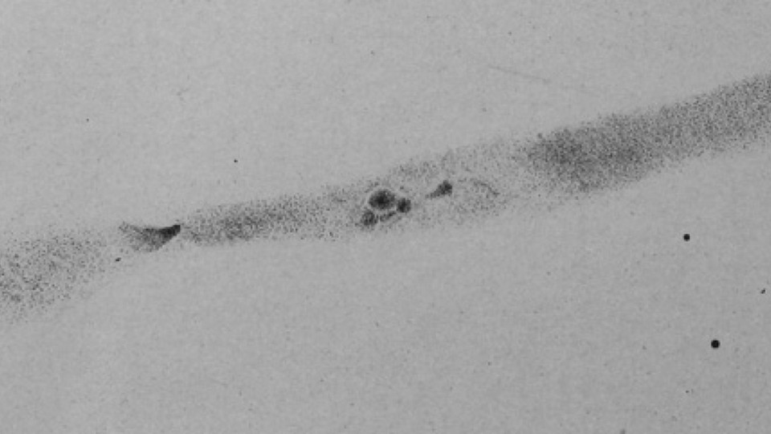
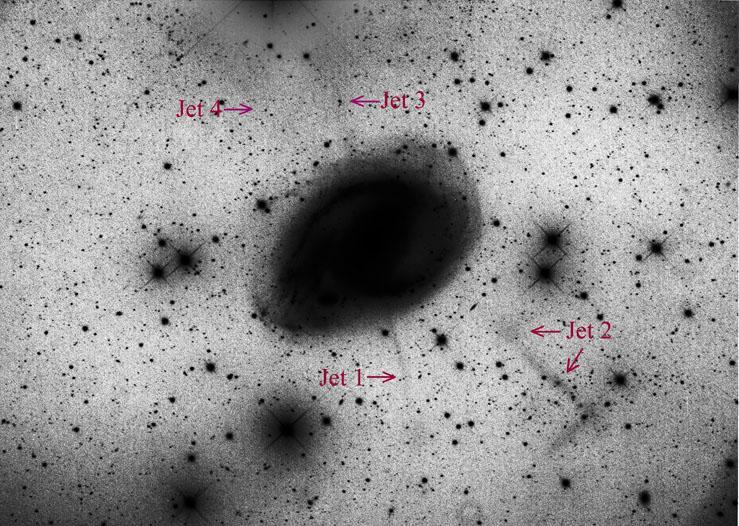

NGC 1097
- RA: 02 46 18.9
- Dec: -30 16 28 (Fornax)
- Type: SB(rs)b pec
- Aliases: Arp 77 = ESO 416-020 = UGCA 41 = PGC 10488
- Size: 9.3' x 6.3'
- MagV: 9.5
- MagB: 10.2
- Distance: ~50 million l.y. (Virgo cluster)
- NGC description: very bright, large, very much elongated 151°, very bright middle and nucleus
NGC 1097 may be overshadowed by better known NGC 1365 in Fornax, but it’s a remarkable barred spiral that certainly deserves to be featured as an "Object of the Week"!

William Herschel discovered NGC 1097 on 9 Oct 1790 (sweep 972) and logged "vB; E 75° np to sf; about 8' long. A very bright nucleus confined to a small part about 1' diameter." From the latitude of Slough in England this galaxy culminated only 9° above his southern horizon. On the same sweep, he also discovered NGC 1344, NGC 1266 and NGC 1425, all near -30° declination in Fornax.
NGC 1097 is a powerful radio and x-ray Seyfert I galaxy with a circumnuclear starburst ring and a supermassive black hole with a mass of 140 million solar masses.
A rather unique feature are four striking optical "jets" that were discovered in 1975. The jets extend out 300,000 light years with one having a bizarre "dog-leg" right-angle turn. As they appear to radiate from the Seyfert 1 nucleus, it was initially thought they were related to the AGN (such as M87's relativistic jet), but it was discovered the jets are composed of ordinary main-sequence stars similar to tidal streams seen in the Milky Way. Another theory is that they were tidal tails drawn out of NGC 1097's disk by the interaction with nearby NGC 1097A.
But more recent studies and models suggest they are the remains of a previously cannibalized dwarf spheroidal galaxy that passed within the inner few kilo parsecs of NGC 1097's disk and one or two knots in the so-called jets may be the stripped nuclei of a former dwarf. As far as the "dog-leg" jet, this may simply be two unrelated intersecting tidal streams.
You don't need to view NGC 1097 from the southern hemisphere to see its strong bar and spiral arms, but here's my best observation with a 30-inch from Coonabarabran in 2015:
At 303x; this showpiece barred spiral contains a bright central bar ~4.5'x1.5' NW-SE. The bar is sharply concentrated with an extremely bright, slightly elongated NW-SE core but no distinct stellar nucleus.
A prominent spiral arm is attached on the northwest end of the bar. The arm is relatively thin, well defined and knotty as it curls counterclockwise to the east, dimming out gradually about 3' ENE of center. A large bright knot is close to the northwest end of the bar, just inside the beginning of the arm and close east of a superimposed mag 14.5 star. NED catalogues this region with the multiple designations NGC 1097:[EKS96] 148 and [EKS96] 151 from the 1996 "An Atlas of H II Regions in Nearby Seyfert Galaxies" in ApJS, 105, 93. Roughly halfway along its length is a pair of fairly prominent HII knots. The first is [EKS96] 245, a 12" knot 2.5' NNE of center. Close east is slightly larger [EKS96] 300/304, 2.5' NE of center. The arm then fades as it passes just south of a mag 15 star.
At the southeast end of the bar a delicate, thin spiral arm unfurls counterclockwise towards the northwest. About halfway along its length is a slightly brighter elongated patch extending ~30" in length, with designations [EKS96] 100/105/119 and others. The arm dims out about 3' WSW of center. The arms stretch about 6' tip to tip, giving overall dimensions of perhaps 7'x6'.
As always,
"Give it a go and let us know!
Steve's follow-up — October 29th, 2018, 11:33 PM
Here's Robert Gendler's image of the main jets. If you look carefully at the "dog-leg" jet #2, it includes a couple of very small knots, perhaps remnants of a digested dwarf.

Steve's follow-up — October 31st, 2018, 09:22 PM
As far as I know the excess of quasars around NGC 1097 was never investigated further. In fact, Arp's paper was never published in one of the principal journals (other than on arXiv and perhaps the Max-Planck-Institut website), perhaps because he also insisted it demonstrated that quasars were ejected from the cores of galaxies.
Arp added this epilogue to the paper, which effectively announced he was being blackballed from mainstream astronomy:
It was commented on the title page of this web posting that the paper had been rejected by the Astrophysical Journal Letters. Thus the editor spoke: “Your paper has not been able to convince either of two independent referees. . . . “No suppression of your work has been done through my action since you are welcome to submit your paper to a different journal.”
The information supplied here should enable the readers to decide for themselves the value of the data and its discussion. But perhaps more important it enables a judgment on the core structure of current science.